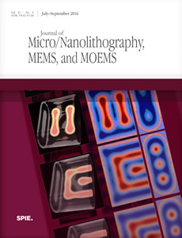

- Home |
- Blog |
- Lithography |
- Published Works |
- For Profit |
- About Chris
- | Gentleman
- | Scientist

On January 1, 2012, I became Editor-in-Chief of the scientific journal known as JM3 (sometimes pronounced "JM cubed"), published by SPIE. I took over from Burn Lin, the founding editor whose vision built this journal into the preeminent peer-reviewed publication on micro- and nanofabrication. Big shoes to fill. With help from the lithography, MEMS and MOEMS community, I am building on an already excellent foundation.
To read the SPIE press release on this appointment, click here.
For some JM3 editorials on how to write a good science paper, click here.
Back to the Publications Home ...